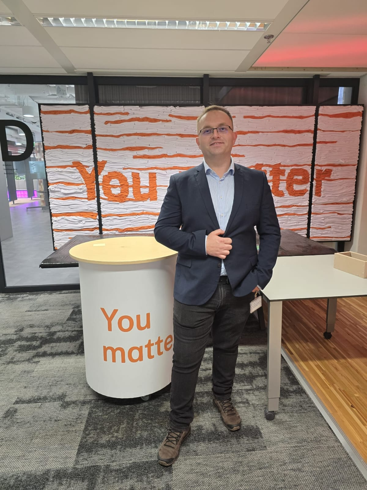
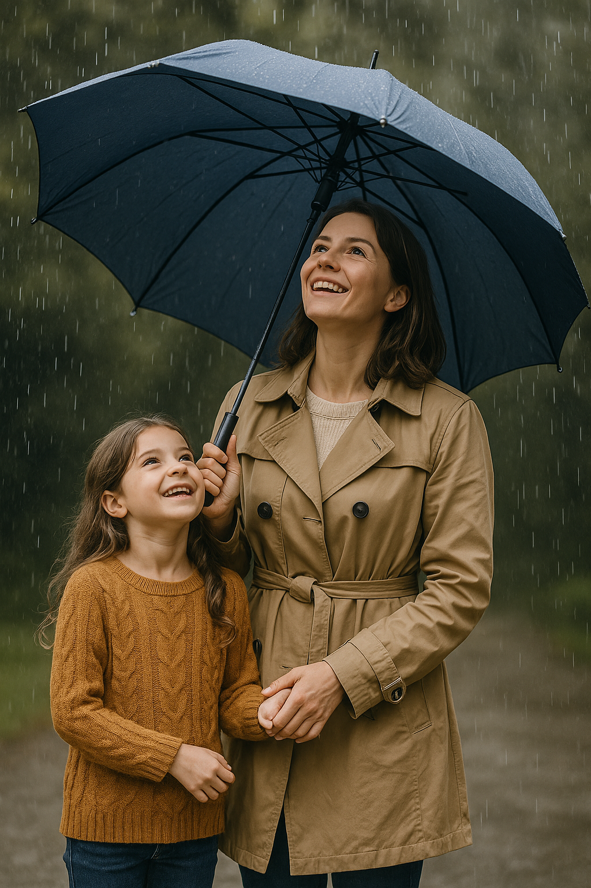
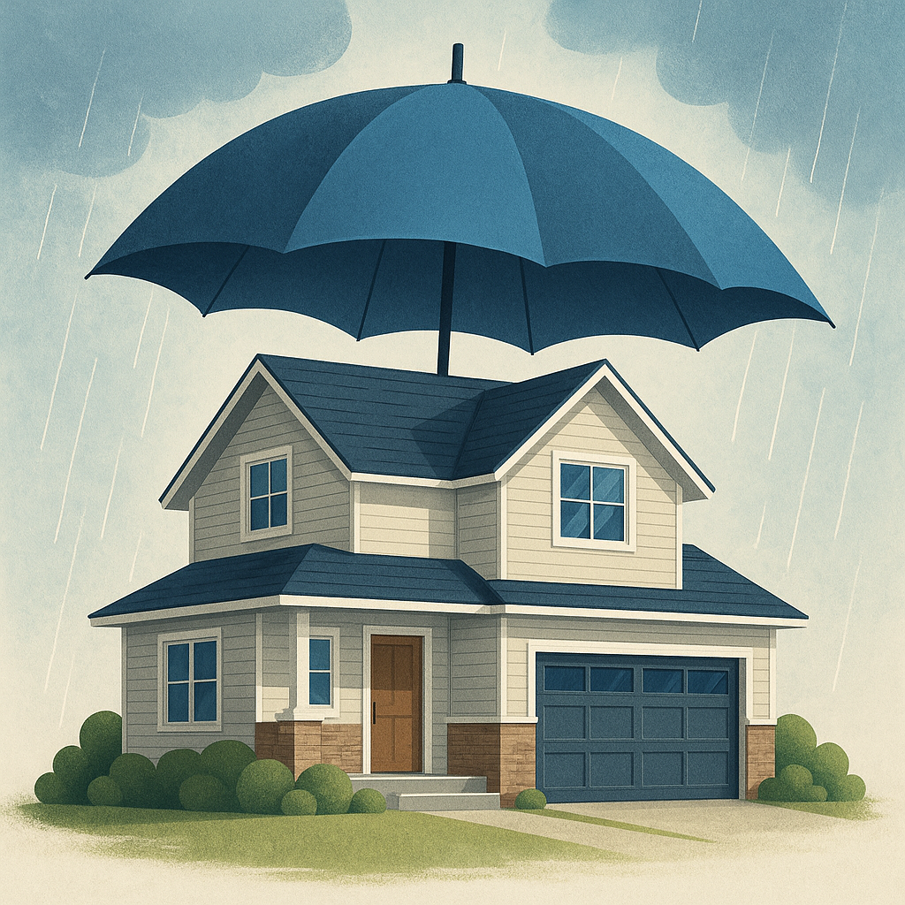
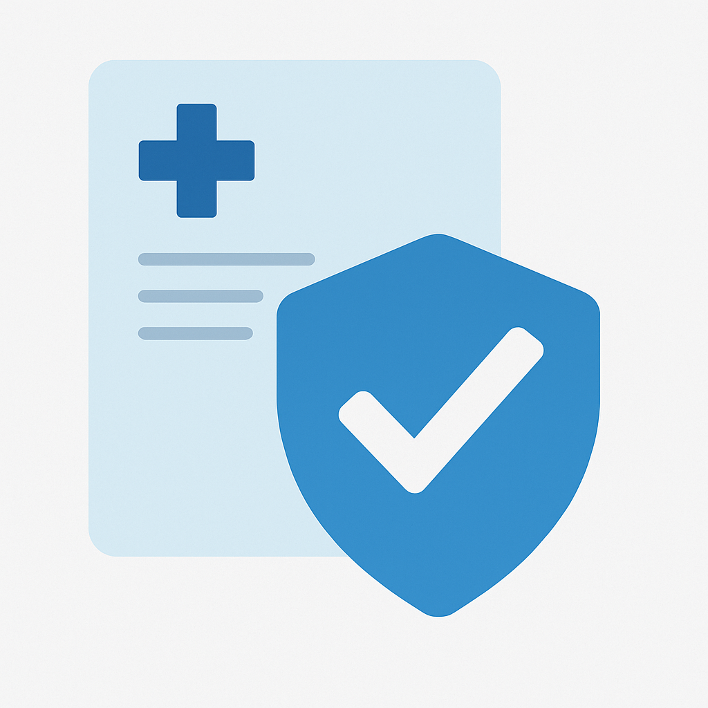

Consultant Financiar
Trăim într-o lume imprevizibilă. Azi ești bine, mâine totul se poate schimba. Dar ceea ce rămâne constant este grija pentru cei pe care îi iubim și dorința de a-i proteja — indiferent ce aduce ziua de mâine. Sunt Radulea Daniel și ajut oamenii să construiască un scut financiar solid, elegant și discret, care să-i protejeze pe termen lung. Nu e vorba doar despre polițe, ci despre decizii bune pentru familie, sănătate și viitor. Fără presiune, fără promisiuni goale. Doar o discuție sinceră, pe înțelesul tău, despre ce opțiuni ai și cum le poți folosi în avantajul tău. Dacă simți că e momentul să-ți pui la adăpost ceea ce contează cel mai mult, sunt aici. Cu răbdare, empatie și soluții clare.
Contactează-mă WhatsApp Email
Sunt Radulea Daniel, consultant financiar în cadrul NN – una dintre cele mai mari companii de asigurări și pensii din România și Europa. Misiunea mea nu este să vând produse, ci să construiesc alături de tine o protecție reală în jurul a ceea ce contează cu adevărat: familia ta, sănătatea ta și viitorul tău financiar. Am ales să lucrez în acest domeniu pentru că am înțeles cât de important este să fim pregătiți. Nu doar în teorie. Ci și în viața de zi cu zi, când apar probleme de sănătate, accidente, perioade grele sau situații care ne pot destabiliza. În colaborare cu NN, îți pot oferi soluții moderne și flexibile de:
Întâlnirile cu mine nu încep cu „am ceva de vândut”, ci cu întrebarea: Ce ai vrea să știi, ca să te simți mai în siguranță? Dacă vrei o discuție sinceră, fără presiune și fără costuri, sunt aici. Fie că doar te informezi sau chiar cauți o soluție, îți voi răspunde cu răbdare, claritate și respect.
Fiecare serviciu pe care îl ofer începe de la o nevoie reală: grija pentru familie, pentru sănătate, pentru viitor. Nu vând polițe. Nu vând speranțe. Ofer soluții pe înțelesul tău, adaptate vieții tale – fără promisiuni goale și fără presiune.

Nimeni nu vrea să se gândească la ce e mai rău. Dar tocmai de aceea e important să o facem cât încă e liniște, cât încă suntem bine. O asigurare de viață nu înseamnă bani sau documente. Înseamnă o îmbrățișare financiară pentru cei care rămân în urma ta, o dovadă că ai avut grijă de ei până la capăt.
Nu poți cumpăra liniștea, dar o poți construi. O asigurare potrivită poate acoperi cheltuielile urgente, datoriile, educația copiilor sau chiar un simplu „respiro” pentru cei care trebuie să meargă mai departe. Și nu e doar pentru situații tragice. Unele tipuri de polițe includ și economisire, așa că în 10-20 de ani poți avea o sumă consistentă pentru tine sau pentru cineva drag.
Dacă ai oameni în viața ta pentru care ai face orice, poate e timpul să faci și asta. În tăcere, cu responsabilitate, fără să spui nimănui. Dar să știi că ai făcut tot ce puteai pentru ei.
Sănătatea ta nu ar trebui să stea niciodată în funcție de un buget. Când ai o problemă medicală, ultimul lucru de care ai nevoie este să te întrebi dacă „îți permiți” să mergi la doctor sau dacă mai poți amâna.
Cu o asigurare privată de sănătate, ai acces rapid la tratamente, investigații, spitalizare și îngrijire de calitate, în clinici moderne. Fără cozi, fără „nu se poate azi”, fără stres. Poți include și familia – copii, părinți, partener – pentru că nu există mulțumire mai mare decât să știi că sunt protejați.
Nu cumperi doar o poliță, ci cumperi liniștea de a ști că, dacă se întâmplă ceva, nu ești singur. Că te descurci. Că ai cu ce. Și asta face toată diferența.

Casa ta nu e doar o clădire. E locul unde dormi liniștit, unde râde copilul tău, unde păstrezi lucrurile care îți spun povestea. O asigurare de locuință nu înseamnă doar să „faci ce trebuie”, ci să fii cu adevărat liniștit că, dacă se întâmplă ceva – un incendiu, o inundație, un cutremur – nu vei rămâne singur.
Poate asigurarea nu va putea înlocui tot ce ai pierdut, dar îți va da șansa să o iei de la capăt, cu demnitate. E una dintre cele mai simple și accesibile forme de protecție. Și de multe ori, una dintre cele mai ignorate. Până e prea târziu.
Poate nu pare o urgență acum. Dar vine o zi în care n-o să mai ai aceeași energie, nici aceleași opțiuni. Statul îți va da o pensie, dar va fi destulă? Pensia facultativă Pilon III e felul tău de a-ți spune ție din viitor: „Îți mulțumesc că te-ai gândit la mine.”
E simplu, flexibil și deductibil fiscal. Adică plătești mai puțin impozit și pui bani deoparte, lunar, pentru ziua în care vei avea nevoie de ei. Și când acel moment vine, ești pregătit. Nu te mai bazezi pe promisiuni. Te bazezi pe tine.
Poate nu putem controla tot viitorul copiilor noștri, dar putem construi o fundație. Un plan de economisire înseamnă că, atunci când va împlini 18 sau 21 de ani, copilul tău va avea o sumă serioasă. Pentru studii, pentru chirie, pentru prima mașină. Sau pur și simplu pentru un vis.
Tu contribui lunar, fără să simți povara. Iar el, la final, va primi nu doar bani, ci dovada concretă că ți-a păsat. Un start în viață oferit cu grijă și responsabilitate. Poate cel mai frumos cadou pe care îl poți face.

Când vine o veste proastă, totul se oprește. Timpul, siguranța, planurile. Un diagnostic sever, un accident grav – nimeni nu e pregătit. Dar financiar… poți fi.
O astfel de asigurare înseamnă o sumă importantă plătită rapid, fără condiții inutile, exact când ai mai multă nevoie. Poți să o folosești cum vrei: tratament, deplasare, recuperare sau sprijin pentru familie. Nu te scapă de durere, dar te scapă de neputință.
Ai semnat cândva o poliță și nici nu mai știi ce include? Sau poate vrei să verifici dacă ai prea mult, prea puțin sau deloc? Hai să ne uităm împreună. Fără costuri. Fără vreo obligație. Doar o discuție sinceră despre ce ai acum și ce ai putea îmbunătăți.
Mulți oameni plătesc de ani de zile polițe care nu-i mai ajută, sau care nu le acoperă riscurile reale. Nu trebuie să fii specialist. Eu îți explic totul pas cu pas, pe înțelesul tău.
Ești antreprenor sau administrezi o echipă? Îți pot construi un pachet de asigurări pentru angajați – fie că vorbim de viață, sănătate sau pensii facultative. Beneficiile sunt reale: angajați mai motivați, imagine mai bună, deduceri fiscale.
Oamenii se simt apreciați când primesc ceva concret, care le poate ajuta familia. Și asta se vede în rezultate, în implicare, în stabilitate. Nu e un cost. E o investiție în oameni.
Toate aceste servicii sunt construite în jurul vieții tale reale. Nu după șabloane. Nu după targeturi. Dacă vrei să discutăm sincer, sunt aici. Fără presiune. Cu răbdare. Cu respect.